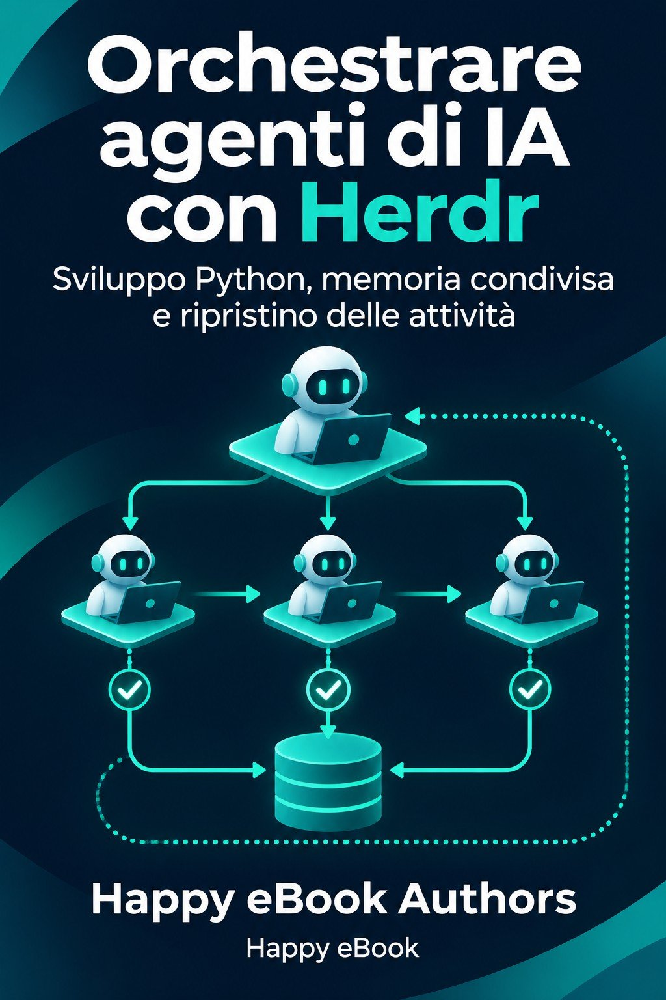

Orchestrare agenti di IA con Herdr
Sviluppo Python, memoria condivisa e ripristino delle attività

Orchestrare agenti di IA con Herdr
Sviluppo Python, memoria condivisa e ripristino delle attività
Orchestrare più agenti non significa aprire molte finestre di chat. Significa assegnare responsabilità chiare, condividere contratti verificabili e sapere come controllare o recuperare il lavoro quando qualcosa non va. In questa guida pratica imparerai a usare la TUI di Herdr come livello di controllo e Python per costruire flussi di lavoro riproducibili. Partirai da una calcolatrice e arriverai a un sito per la gestione delle attività realizzato da cinque ruoli, a un gruppo di ricerca tecnica, a una pipeline automatizzata e a una coda persistente con lease, retry e recupero. Il libro mostra come: • definire interfacce, responsabilità e criteri di accettazione prima di delegare; • coordinare Developer, QA e Reviewer senza sovrapporre i confini dei file; • produrre revisioni indipendenti e rilievi riproducibili; • trasferire il lavoro con documenti condivisi e ricevute verificate tramite hash; • convalidare API, prove di ricerca, artefatti e risultati di test; • gestire concorrenza, timeout, tentativi e proprietari scaduti. Gli esempi sono pensati per chi ha familiarità di base con terminale, Python, JSON e Git. Il pacchetto di accompagnamento mette a disposizione codice, test, prompt e istruzioni per gli esercizi. I test di riferimento sono eseguibili senza scaricare modelli; l’uso di veri agenti richiede Herdr e una CLI configurata. Una guida per sviluppatori, docenti, autodidatti e piccoli team che vogliono passare dalle promesse degli agenti a risultati controllabili, senza confondere una risposta del modello con una consegna verificata.
作品介紹；目前未提供購買或試閱入口